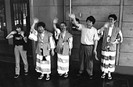
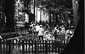
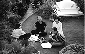
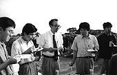
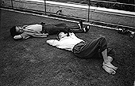

98.7.1（水）
・美術長田さんが旅行用パンフレットの表紙を描き上げる。
・6時から旅行委員会が行われる。
・若林さん等が来社し、記者発表用予告編の素材チェック。遅くまで岡安編集の小島さんとアビッドの調節をしていた。
・12時すぎに高畑さんが帰ろうと思ったら、車のバッテリーが上がっていた。急遽制作の車からケーブルで電源をとりエンジンをかける。原因は半ドアで鍵をロックしてしまい、室内灯が付きっぱなしになっていたらしい。
98.7.2（木）
・社員旅行のパンフレットがようやく完成。B-5版26頁の力作だ。110部もの製本は社内ボランティアの活躍により、1時間で終了する。
・かなりいいかげんな状態で保管してしてあった、過去のジブリ作品の原画を整理することになる。今年入った新人達が中心となって、まず「紅の豚」の原画から整理を始める。ほこりを落とし、CUT番号順に整理をしていく。懐かしがって様子を見に来るスタッフが多数。
98.7.3（金）
・賞与支給日。
・ツール・ド・信州に向け、参加者の肺活量検査が行われる。みな日頃からよく走っているためか、平均しても四千台の後半となかなか良い数値が出ている。因みに男子の最低は、タバコを吸いまくっているデスクの居村氏で3,300cc。しかし居村氏は「その分体重が軽いので（49キロ）大丈夫」と自信を見せている。
98.7.4（土）
・来週半ばから本格的に始まる声の録音に向け、マック版急速演技記録計に入っているCUTをつないで、録音の参考にするための作業が大急ぎで進められる。来週月曜日から社員旅行のため今週中に作っておかなければならないのだ。結局、何人かは始発で帰ることになる。
・某氏がが自転車で事故を起こし、顔面を何針か縫う怪我をしたと電話連絡がある。明後日からの社員旅行の参加は取りやめるもよう。
98.7.6（月）
・四国松山へ社員旅行に出発。
98.7.7（火）
・今日も松山。バスに乗って琴平や大歩危、小歩危を廻るツアーに参加したり、それぞれが自由行動。約一班が夜10時頃までホテルに戻らずひやりとさせる。


98.7.8（水）
・またまた松山。4時に松山空港に集合するまで自由行動。今日は昨日片塰氏が行って感動したという内子に行った人が多かった。夕方無事帰京。
・MITスタジオにて○○徹、荒○雅○、朝○雪○三氏によるたかし、しげ、まつ子の声の録音が行われる。絵の出来ている部分はアフレコ気味に、出来ていない部分はプレスコとして録音される。朝○さんは先週ジブリに来て本読みを行っているのでのっけからまつ子さんになりきっている。また荒○さんは、しげさんの毒気と可愛らしさが見事に出ていて、まさにイメージ通り、と高畑監督らスタッフはおお喜び。明日も続きが行われる予定。
98.7.9（木）
・再びMITにてまつ子、たかし、しげの声の録音が行われる。朝○さんから銅鑼焼きとバナナ（本編に関係アリ）の差し入れがある。朝○さんは最初19時迄の予定であったが、のって来たのか、次のスケジュールを1時間程ずらしてまで頑張ってくれた。
・今年は一月も夏休みを取っている暇が無いので、部署毎に分散して夏休みを取ることに。まず作画が今日から一週間お休み。
98.7.10（金）
・テレセンにて記者発表用予告編のダビング作業。
・先日事故にあった某氏が連絡もないし（彼の家には電話が無い）、会社にも出てこないので、心配になった神村氏と居村氏が家に向かう。
98.7.11（土）
・美術二人が高畑さんにボードを大量に見せる。高畑監督から細かい色やグラデーションの指示が出る。
・ツール・ド・フランスは見たいが、衛星放送に入るのはイヤだ。という宮崎監督の要望を受け、所沢の奥地に住む野崎氏の家にパーフェクスカイTVのアンテナを設置に行く。
98.7.13（月）
・作画の休み開けに作画＆メインスタッフコーナーの席替えが予定されているが、作画スペースがあまりに狭くなってきているので、メインスタッフコーナーにあった美術の机の一つを三階へ撤収。武重さんは完全に三階のみで作業することに。
・事故にあった某氏が出社。まだ右目の周りが青くなっていて痛々しい。自転車はおしゃかになったらしいが、本人は「まだ何台もありますから」と涼しい顔。
・デスク神村氏が、日頃お世話になっている外注さん宅を社員旅行のお土産を持ってまわる。土産より仕事を早く、という声が聞こえてきそうな…。
98.7.14（火）
・絵コンテ9-10、11 13CUT 70秒分がアップ。
・野崎氏がツールのビデオを持って自転車で来社。がんがん走っているな、と思ったので「調子どう？」と聞いたら、服をまくり、べろりと皮の向けた肩を見せながら「狭山湖のあたりを走っていたら、急におばさんが飛び出してきて激突ですよ」との返事。昨年の古傷を再びぶつけてしまったらしい。おまけに自転車の前輪ホイールがぐにゃぐにゃになってしまったとか。自転車はすぐ修理したようだが、身体の方が心配だ。それにしても今年は事故が多い。
98.7.15（水）
・伊藤君と作っていた香盤表がほぼ完成。
・ミラマックスの○○氏が来社、インターナショナルのアルパートさんと社内を見学。
・シーン5-3に色が付く。まだテスト用だがCG部のモニターでメインスタッフが確認。
・なぜか先日買ってきた「となりの山田くん」の参考用CDが行方不明になってしまった。門屋さんによれば鈴木プロデューサーが車で聴いているのでは、とのことだが、よく分からないので、もう一枚吉祥寺ディスクINで購入する。
98.7.16（木）
・朝11時から赤坂プリンスにて「となりの山田くん」の記者発表が行われる。
・バーで、昨日見たシーン5-3を、例のプロジェクターで所謂ラッシュチェックを行う。その後メインスタッフが問題点の洗い出し会議を行う。
・第二回○○のアニメ塾が行われる。今日は前回出された課題をもとに三人づつが部屋に入り、個人教授を受ける。描いてきた絵のどこが悪いのか、どうすれば良くなるのか、を懇切丁寧に説明。分かりやすくて実践的な講義は大好評。
・各社のサポーター、選手代表等が来社し、「ツール・ド・信州」のサポート打ち合わせが行われる。ジブリサポーターの代表、演助の伊藤氏は、会をいつものおちゃらけた調子で進めようと思っていたら、各社代表のあまりに真剣な目に圧倒されたらしい。話しを聞いた選手達にも思わず緊張が走る。個人的にはもうちょっと気楽に走りたいんだけど…。
98.7.17（金）
・夕方に先日の記者発表で上映された予告編の社内上映会が行われる。
・録音した声をもとに作業を進めるための、試聴用テープの進行具合を若林さんに聞く。現在既に作業を発注していて、来週の火曜日には録音した三分の一程度は渡してもらえるとのこと。残りは来週中に完成させたい意向。
・高橋さんが「サマースクールIN大内」の講演会のため、先日社員旅行に行ったばかりの四国へ向かう。
98.7.18（土）
・11時30分頃、四国の高橋さんよりテレビ電話に連絡が入る。鈴木プロデューサーはジブリからテレビ電話で、短いながら出演する。四国の会場ではスクリーンに鈴木プロデューサーが映し出されていたらしい。
・5時より、屋上にて『「となりの山田くん」出陣式』が行われる。スタッフのほとんどが出席し、屋上の芝生に寝ころびながら、一時の休息を得る。



・若林さんからTEL。早くも試聴用テープが、録音分全て完成したらしい。明日神村氏がテレセンから回収し、高畑さんに聴いてもらうことに。
98.7.21（火）
・試聴用テープを聴くため、社内にはラジカセタイプ、メインスタッフにはセパレートタイプ、高畑監督にはポータブルの三台のMDを購入。それにしても最近の電気製品は異常に安い。
・回収した試聴用テープをアビッドで古城君が編集。間に入ったNG分や、余計な間をつまむ。その後MDにダビング。
・今年のツール・ド・信州に参加するIGチームは、ユニフォームをフェスティナに統一しているらしいのだが、現在行われているツール・ド・フランスで、そのフェスティナがドーピングでチームごとツールを追放になってしまった。うーん。
・松尾さんシーン9-5作画打ち合わせ。
98.7.22（水）
・ここ数日間調子の悪かったコンピュータのサーバーがダウン。おかげで昨日の仕事分がパーとなる。朝から今後のための緊急コンピュータ会議が行われる。それにしてもSGIの機械の信頼性はあまりよくないぞ。
・高橋、神村両氏が原画の○○さんに会いに行く。8月から社内にIN。
・某古本マンガ専門店から宮崎監督に講演依頼があったが、以前宮崎監督の盗まれたイメージボードを売っていた店（抗議したが、持ち込んだ人の連絡先が分からなくなった、とうやむやにされた）だったので鈴木プロデューサー共々大激怒。因みにその絵は未だに行方不明。
98.7.23（木）
・第三回○○塾が行われる。○○さんは昼過ぎに来社し、午前中に回収しておいた課題を、個別に添削。7時からは全体の講義が行われる。
・動画を描いてくれる予定の○○さんが来社。「となりの山田くん」の出来上がっているQARや資料に目を通す。7月28日から社内にIN。
98.7.24（金）
・6時よりバーにおいて、プロジェクターの色調整のチェックがメインスタッフによって行われる。前回のチェックからの変更点は、キャラクター色の若干の変更。コンピュータからプロジェクターへのデータ移動時に生じる色変化の低減。プロジェクター自体の色調整等々である。再び様々な問題が浮き彫りになる。
・落ちるサーバーに対する、対策会議が行われる。
・作監小西氏の手元にものが無くなりつつある。ピンチ。
98.7.25（土）
・新人等が中心メンバーとなり自衛消防訓練実行委員会が行われる。訓練が行われるのは11月の予定であるが、それまでに各階でスタッフの役割分担（消火係や誘導係等）を明確にし、きちんとした防災訓練にする計画。もちろん前回も実施した炊き出しも行う予定。
98.7.28（火）
・「となりの山田くん」の音楽打ち合わせが行われる。高畑監督が各シーンに必要な音楽の一覧表を配る。
・原画として山口さんIN。シーン7-4を作打ち。
・絵コンテ、シーン2-1、94秒分アップ。
・制作の斎藤氏が、生まれて此の方うなぎを食べたことがない事実が発覚、早速明日の土用の牛の日にうなぎをおごることに。ところがそれを聞きつけ「実は私もうなぎを食べたことがなくて」と虚偽の報告をしてくるもの多数。
98.7.29（水）
・高橋、米沢氏らと消防訓練成功に向け、秘密会議を行う。
・制作斎藤氏、うなぎのあまりの旨さに「おれのこれまでの人生は…」と考え込んでいる。
98.7.30（木）
・若林さんや小島さん等と音響作業についての会議が行われる。新機材が多数入っているため、暗号による会話に聞こえてしまうのは私だけか。
・宮崎さんが「ツール・ド・フランス」アルプスステージにはまっている。今日もイラストの仕事を片付けなければならないにも関わらず、応援するマルコ・パンターニが総合首位に立っている為、興奮してそれどころではない様子。横では商品部浅野氏が「早くしてくださいよ」と嘆いている。
・第四回○○塾が行われる。今回はハンマーの振り下ろし。次回はこれに○○さんの指示による修正を加え、QARに取り込む予定。
98.7.31（金）
・ジブリの近所に「華屋与兵衛」オープン。東小金井に来て6年、ついに北口に新しい飯屋がオープンだ。待ちに待った開店にメインスタッフ総出で夕食に。
・シーン5-3の修正版が完成。明日再度チェックの予定。
・明日のミ○コ○々さんの声入れに向け、また新しい部分を追加した映像資料を作成している。その為、原画のQARとマック版急速演技記録計の入力が滞っている。
| 日誌索引へ戻る |
| 「もののけ姫」トップページへ戻る |